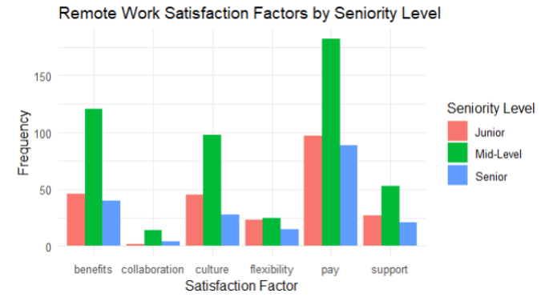

Project Overview
By Darren Keilty, Bryce Corrin
BTMA 431 Fall 2024 — Professor Duy Dao
This project investigates the rise of remote work in today’s digitally driven workplace. By scraping employee reviews, survey responses, and HR analytics data, we aimed to better understand how remote work options relate to employee job satisfaction and retention using R.
Key Findings
- Pay, benefits, and workplace culture are the top drivers of satisfaction across all seniority levels and age groups. Senior employees prioritize benefits and security, while junior employees focus on financial growth. Flexibility and work-life balance were less frequently cited, possibly because they’re now expected in remote roles.
- High satisfaction industries include Tech, Scientific Services, Media, Arts, and Food Services. Within these, roles like Clerical Support Workers and Specialist Managers showed the highest satisfaction. Tailoring remote work policies by role is key.
- Remote work is the strongest predictor of employee retention. Employees with remote options stayed at a rate of 75%, versus 47% without. Other influential factors include work-life balance and job role.
Conclusion: Remote work significantly boosts employee satisfaction and retention, with clear policies and job roles proving especially important—surpassing pay, benefits, and work-life balance in predictive power.
- 📊 Identified top factors like flexibility, support, and work-life balance.
- 👥 Compared trends across age groups and seniority levels.
- 📉 Measured correlation between remote flexibility and attrition risk.
Sample Visuals
